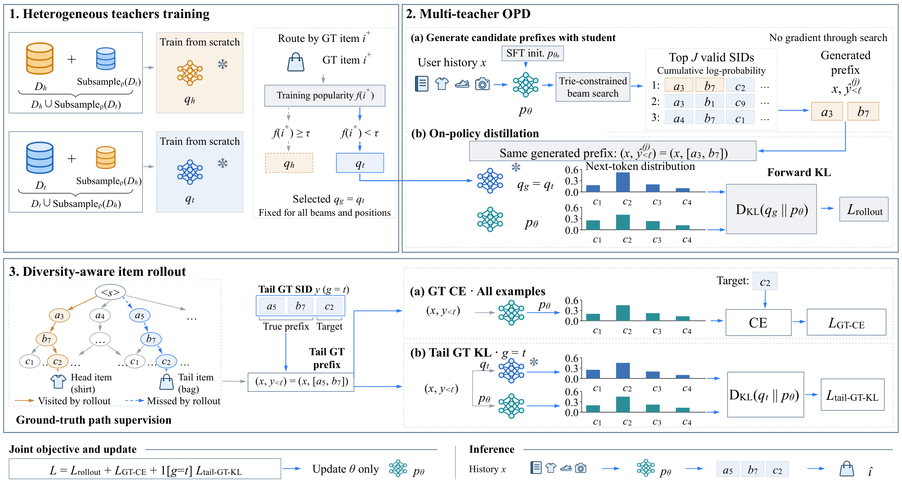
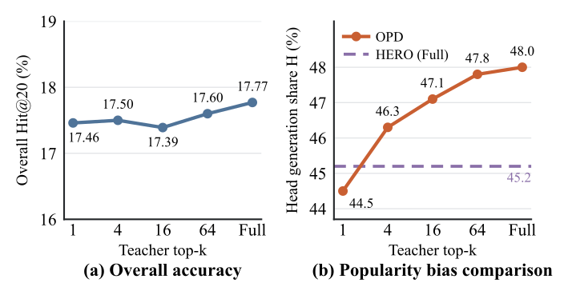
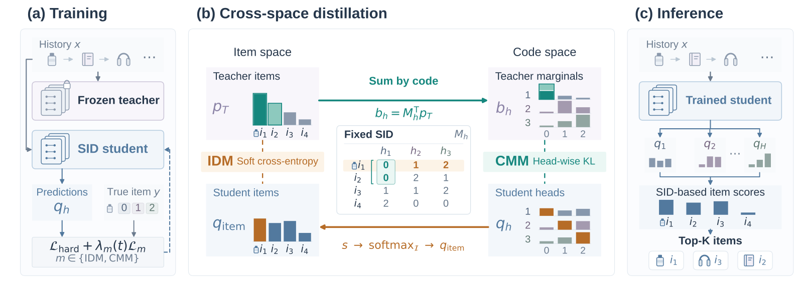

目录 · 8 节
1它到底在解决什么问题？2HERO 怎么做：先看全景3为什么要两个老师，又按什么分？4为什么还要把冷门商品的真实路径加进来？5实验：更准了，也更均衡了吗？6我认为它的局限7一个推荐团队可以怎么试8结论做生成式推荐、又在考虑用蒸馏做后训练的团队值得读，因为它指出了一个容易被总体指标盖住的副作用：让学生模型自己生成、老师逐位给出完整概率的蒸馏（OPD）能让生成式推荐训得更快，但学生会越来越偏向热门商品。原因有两头：老师的概率本来就偏爱热门商品的 SID，学生自己生成时也很少走到冷门商品的 SID，这些路径几乎拿不到监督。论文提出的 HERO（两个老师分工、再补上冷门路径的 on-policy 蒸馏框架）分别处理这两头：训练一个热门老师和一个冷门老师，每条训练样本按真实点击的商品属于哪一组交给对应的老师；冷门商品的真实 SID 也送去让冷门老师监督。上线只用学生。
在 1688 首页「猜你喜欢」的 15 天 A/B 里，GMV 比线上已有的生成式推荐提升 3.412%。离线在 1688 数据上，冷门商品的命中率从标准 OPD 的 0.5301 提到 0.5416。热门、冷门两组「曝光占比与需求占比之比」偏离 1 的程度从 0.715 降到 0.392，越小说明推荐的曝光越贴近用户的真实需求。蒸馏传给学生的不只是知识，还有老师对热门的偏爱。
它到底在解决什么问题？
生成式推荐让模型看着用户历史，逐位生成下一个商品的 SID。常规的 SFT 每一位只学真实商品那一个 token。OPD 换了一种监督方式：先让学生自己生成 SID，再在学生走过的每个前缀上，让老师给出下一位所有候选 token 的概率，学生去对齐这整张分布。这样没被点击的 token 也拿到了信号，监督更密。论文图 1a 里，OPD 只用约 5% 的训练量，点击命中率就超过了 SFT 用满全部训练量的水平。
问题出在偏差会被放大。设想一个电商首页（示意）：用户刚买过收纳盒，真实点击的是一个销量不高的折叠置物架。
| 商品（示意） | 热门还是冷门 | 老师给第一位 token 的概率 | 学生 beam search 有没有走到 |
|---|---|---|---|
| 爆款收纳箱 | 热门 | 0.50 | 走到 |
| 爆款衣架 | 热门 | 0.30 | 走到 |
| 折叠置物架（真实点击） | 冷门 | 0.05 | 没走到 |
学生对齐老师后，会把热门商品的概率再抬高一点。下一轮生成时，它更少走到置物架那条路径，这条路径上也就更少有老师的监督。两件事互相加强，一轮比一轮偏。

论文用「放大倍数」量化这个现象：热门商品在模型生成结果里的占比，除以它在候选集里的占比。图 1b 标出的数字里，SFT 是 6.46 倍，OPD 是 7.29 倍，说明 OPD 让学生比 SFT 更偏向热门。热门和冷门的分界按训练期的交互次数划：在 1688 上，交互不少于 4,096 次的商品算热门，其余算冷门。
HERO 怎么做：先看全景

整个训练分三步，最后只上线一个学生模型：
- 离线训练两个老师。热门老师用全部热门样本，再掺 10% 随机抽的冷门样本；冷门老师反过来。两个老师和学生结构完全相同。老师各自从头训练，蒸馏时冻结不动；学生从 SFT 模型初始化，蒸馏时只更新学生。
- 学生自己生成，老师打分。每条样本按真实商品的热度选老师。学生做 beam search 生成 32 条 SID，在每条的每个前缀上和选中的老师对齐下一位的分布。
- 用真实 SID 补监督。所有样本都对真实 SID 算交叉熵；真实商品是冷门时，还让冷门老师沿真实 SID 的前缀再监督一遍。
设计的关键分工是：选哪个老师决定信号偏不偏，补真实路径决定冷门商品有没有信号。下面拆开讲。
为什么要两个老师，又按什么分？
只用一个老师时，所有样本拿到的分布都偏向热门 token。HERO 换成两个各有专长的老师。它们不是更大的模型，而是同样大小、只在训练数据的配比上不同。冷门老师见过的数据以冷门商品为主，所以在冷门商品的 SID 上给出的概率更准。
分配规则看的是这条样本真实点击的商品。真实商品是热门的，交给热门老师；是冷门的，交给冷门老师。这里要分清训练和推理：真实商品只在训练数据里有，所以分配只发生在训练时。推理时两个老师都不参与，学生直接看用户历史生成 SID，不需要知道目标是热门还是冷门。
学生和老师怎么对齐？给定用户历史，学生用 beam search 生成 32 条完整 SID。搜索只允许走到真实存在的商品，论文用一棵前缀树限制每一步能选的 token。对每条 SID 的每个位置，把前面已生成的部分作为前缀，同时喂给学生和选中的老师，各自输出下一位的完整分布，再用 forward KL 把学生拉向老师：
这里 是用户历史， 是学生第 条生成结果的前 位， 是按真实商品热度选中的老师， 是学生，。前缀由学生生成，学习信号由老师提供；梯度不穿过 beam search，只更新学生在这些前缀上的输出。 Hoot 说

- 前缀树管的是搜索：它只决定 beam 里出现的都是真实商品；学习信号来自老师在这些前缀上的分布。
- 真实商品只选老师：它不出现在学生的输入里，所以推理时没有它也照样能用。
示意样本，真实点击的是一件冷门商品。左列是训练时才有的步骤，右下角是推理时：老师和真实商品都不在场。
出处
论文 §3（两个老师按真实商品热度分配、beam 宽度 J=32、前缀树约束搜索、forward KL 只更新学生）为什么不干脆把两个老师的分布各取一半平均？消融里正好有这一组：在 1688 上，固定各取一半时冷门命中率是 0.5252，按真实商品分配是 0.5416。说明老师要和样本对上号。各取一半为什么差，我的猜测是混合后的分布仍然偏向热门。
为什么还要把冷门商品的真实路径加进来？
换了老师，只解决了「信号偏不偏」。学生生成时走不到的路径，老师再准也没机会监督。HERO 的第二个设计就是补上这些路径。
论文图 2 的例子：一条样本的真实商品是冷门的包，图里它的 SID 是 [a5, b7, c2]。学生 beam search 走的是 [a3, b7]，没走到 a5 开头的路径。因为这条样本已经按真实商品交给了冷门老师，冷门老师会监督两条前缀：学生走过的 [a3, b7]，以及真实的 [a5, b7]。真实前缀 [a5, b7] 上的这份监督就是新增的一项，公式和上面相同，只是前缀换成真实 SID：
是真实 SID 的前 位， 是冷门老师。这一项只对真实商品是冷门的样本算。所有样本还保留对真实 SID 的普通交叉熵。总目标是三项直接相加，权重都是 1，只更新学生。
这和把冷门样本加权重不一样。加权只是让真实 token 那一个位置的损失更大；这里是让冷门老师在真实前缀上给出下一位的整张分布，这条前缀下其他候选 token 也一起拿到信号。论文专门比了加权：在继续训练的 SFT（SFT++）设置下，把冷门样本的交叉熵权重从 0.5 调到 8，总体和冷门命中率都追不上 HERO（图 3）。
实验：更准了，也更均衡了吗？
离线实验用 1688 数据和三个公开数据集（Amazon 的 Beauty、Pet，以及 MovieLens-1M）。1688 上看前 240 个推荐里是否命中点击、支付和冷门点击；公开数据看前 20 个。
衡量均衡用两个指标。第一个是 DTR（需求曝光比），比的是曝光和需求：热门商品的曝光占比（排名越靠前的推荐位权重越大）除以它的需求占比，再除以冷门商品的同一比值，等于 1 说明曝光和需求成正比。举个示意：热门商品占点击需求的 50%，却占曝光的 75%，比值 1.5；冷门占需求 50%、曝光 25%，比值 0.5；DTR 就是 3，严重偏热门。表里报的是 DTR 离 1 有多远，越小越好。第二个是 ORR（推荐集中度），指出现最频繁的 5 个商品占了所有推荐位的比例，越小说明推荐越不扎堆。
| 方法（1688） | 点击命中 | 支付命中 | 冷门点击命中 | DTR 离 1 的距离 | ORR |
|---|---|---|---|---|---|
| SFT | 0.5742 | 0.7562 | 0.5302 | 0.654 | 0.0027 |
| 标准 OPD（GKD） | 0.5786 | 0.7584 | 0.5301 | 0.715 | 0.0029 |
| BEAR | 0.5763 | 0.7571 | 0.5351 | 0.479 | 0.0028 |
| HERO | 0.5819 | 0.7607 | 0.5416 | 0.392 | 0.0025 |
表里的标准 OPD 是对照方法 GKD（只用一个全量数据训练的老师，在学生生成的路径上蒸馏，同时保留真实 SID 的交叉熵）。它把点击命中提高了一点，冷门命中却没动，DTR 离 1 更远了。这正是开头说的现象：只看总体指标，看不出蒸馏让推荐更偏。HERO 在三项命中上都最高，DTR 也最接近 1，说明准确和均衡可以同时拿到。四个数据集上 HERO 的总体和冷门命中都是最好。MovieLens-1M 上，对照方法 BEAR（一种搜索感知的生成式推荐训练方法）的 ORR 更低（0.0418 对 0.0434），但它的总体命中 0.1896 低于 HERO 的 0.1936，说明推荐不扎堆本身不等于推荐得好。
消融（1688）把各部件的作用拆得比较清楚。全部样本都用热门老师时（这一组同时去掉了冷门真实路径项），DTR 离 1 的距离涨到 2.736，冷门命中跌到 0.4977；全部用冷门老师时，点击命中跌到 0.5463。这说明单个老师总要牺牲一头。去掉学生生成路径上的 KL，冷门命中掉到 0.5222，是三项损失里掉得最多的；去掉冷门真实路径那一项，冷门命中从 0.5416 降到 0.5329，DTR 离 1 的距离从 0.392 升到 0.742，说明这一项同时影响冷门命中和曝光均衡。

还有一个实验直接验证「越密越偏」：在 MovieLens-1M 上，只把老师概率最高的 k 个 token 传给学生。k 从 1 增加到完整词表，总体命中只在 17.39% 到 17.77% 之间小幅波动，热门商品在生成结果里的占比却从 44.5% 升到 48.0%。HERO 用完整分布时这个占比是 45.2%，说明它保留了完整分布，又压住了这种偏移。这些读数来自图 5。作者据此认为，老师分布里排在后面的 token 也带着热门偏好，监督越密，传过去的偏好可能越多。
线上 A/B 从 2026 年 9 月 24 日跑到 10 月 9 日，按用户随机分成等流量的几组。和线上已有的生成式推荐比，GMV 提升 3.412%（95% 置信区间 0.759% 到 6.065%）。因为推理只用学生，响应时间没有明显变化，这意味着收益不是靠加推理开销换来的。冷门商品的人均曝光、人均点击和点击率也都有提升。
我认为它的局限
第一，线上收益的区间很宽。GMV 提升的 95% 置信区间是 0.759% 到 6.065%，下限不到 1%。离线的绝对差距也不大：1688 点击命中从标准 OPD 的 0.5786 到 0.5819。所以我会把 3.412% 当作方向可信、幅度还要自己复现的结果。
第二，训练成本明显上升。学生从 SFT 模型出发，蒸馏只是一段较短的后训练（1688 上只用训练窗口的最后四天）。但除了学生，还要从头训两个和学生同样大的老师；蒸馏时每条样本要跑宽度 32 的 beam search，再让老师在每个前缀上做前向。推理没有额外开销，但离线训练的算力要提前算清楚。
第三，热门和冷门是一刀切的两组。1688 上以 4,096 次交互为界，刚过线和远超线的商品用同一个老师。公开数据上的冷门命中只算训练里出现过的冷门商品，训练中从没出现过的新商品不计入，所以它对冷启动商品帮多少还看不出来。
一个推荐团队可以怎么试
- 先量偏差。在已有的蒸馏或后训练模型上，按交互次数把商品分成热门和冷门，算放大倍数和 DTR。如果蒸馏后 DTR 明显变差，才有必要往下做。
- 再做按真实商品分配老师的 OPD，先不加冷门真实路径项。对照组用现有的单老师 OPD 和「两个老师各取一半」，确认收益来自对号入座而不是多了一个老师。看冷门命中和 DTR 是否改善、总体命中是否持平。
- 有效后再加冷门真实路径那一项。不要跳过学生生成路径上的蒸馏、只在真实路径上蒸馏：论文里这样做的对照组 GT-KD（只沿真实 SID 前缀蒸馏）在 1688 上 DTR 离 1 的距离是 0.994，比 SFT 的 0.654 还差。
- 线上除了 GMV，同时看冷门商品的人均曝光和点击率，以及头部 5 个商品占推荐位的比例，确认收益不是靠更集中的热门推荐拿到的。
结论
生成式推荐用蒸馏做后训练时，除了看总体命中，还要看推荐的热度分布有没有被老师带偏；HERO 的做法是让偏好不同的老师按样本对号入座，再把学生走不到的冷门路径补进监督。
| 维度 | 评价 |
|---|---|
| 问题重要性 | 高。OPD 正在被用于生成式推荐的后训练，它带来的热门偏差只看总体命中发现不了 |
| 方法创新性 | 中高。两个老师和按目标分配并不复杂，但把「偏差来自老师和来自学生生成」两个来源分开处理，思路清楚 |
| 实验证据 | 较强。四个数据集、完整消融、密度实验和 15 天线上 A/B，只是线上提升的置信区间较宽 |
| 工程成本 | 中高。多训两个老师，训练时每条样本 32 条 beam，推理不变 |
| 是否值得尝试 | 值得。已经在用蒸馏、又关心长尾曝光的生成式推荐团队，可以先试按真实商品分配老师，再加冷门真实路径 |
读完这篇，你觉得
夜读鸮记下了，谢谢你的反馈。
点一下即可，无需登录；再点一次撤回。只统计匿名次数，不记录你是谁。
相关论文RELATED
 Generative · 2026-10-29KL-MOPD: Discrepancy-Aware Multi-Objective On-Policy Distillation for Generative Recommendation把点击老师和价值老师一起蒸馏进生成式推荐时，每个 token 平分权重并不公平：在 TencentGR 上，学生生成第 1 个 token 时离价值老师的 KL 是离点击老师的 3.13 倍，而且难学的老师在后两个 token 换成了点击老师。浙大和阿里的 KL-MOPD 在训练前算一次学生离两个老师的距离，每个 token 上离得更远的老师拿更大的权重，训练时没有额外开销。线上 A/B 中，广告收入提升 1.63%，说明点击和价值两个目标一起涨了。
Generative · 2026-10-29KL-MOPD: Discrepancy-Aware Multi-Objective On-Policy Distillation for Generative Recommendation把点击老师和价值老师一起蒸馏进生成式推荐时，每个 token 平分权重并不公平：在 TencentGR 上，学生生成第 1 个 token 时离价值老师的 KL 是离点击老师的 3.13 倍，而且难学的老师在后两个 token 换成了点击老师。浙大和阿里的 KL-MOPD 在训练前算一次学生离两个老师的距离，每个 token 上离得更远的老师拿更大的权重，训练时没有额外开销。线上 A/B 中，广告收入提升 1.63%，说明点击和价值两个目标一起涨了。 Generative · 2026-11-10Rethinking Latent Reasoning for Generative Recommendation: Beyond Teacher-Generated CoT and Recurrent Hidden-State Feedback生成式推荐若要在中间做潜在推理，通常得先让老师模型写出思维链，成本高，也不容易稳定。这篇论文不再生成老师轨迹，而是先用固定的稀疏编码器把历史商品描述编成可缓存的词汇特征，再把同一用户见过的商品特征汇总成一个多热语义目标；训练时用浅层线性头，让插在历史和目标商品编码之间的推理 token 的隐状态去预测这个目标。这些目标只依赖历史上见过的商品，不会偷看下一个要预测的物品。只做监督微调时，方法在四个推荐基准上超过所比较的基线；在 Beauty 上，相对 MiniOneRec，NDCG@1 提高了 20.6%，NDCG@5 提高了 10.3%。对照实验表明，增益来自与输入对齐的历史语义监督，而不是多出来的 token 本身。
Generative · 2026-11-10Rethinking Latent Reasoning for Generative Recommendation: Beyond Teacher-Generated CoT and Recurrent Hidden-State Feedback生成式推荐若要在中间做潜在推理，通常得先让老师模型写出思维链，成本高，也不容易稳定。这篇论文不再生成老师轨迹，而是先用固定的稀疏编码器把历史商品描述编成可缓存的词汇特征，再把同一用户见过的商品特征汇总成一个多热语义目标；训练时用浅层线性头，让插在历史和目标商品编码之间的推理 token 的隐状态去预测这个目标。这些目标只依赖历史上见过的商品，不会偷看下一个要预测的物品。只做监督微调时，方法在四个推荐基准上超过所比较的基线；在 Beauty 上，相对 MiniOneRec，NDCG@1 提高了 20.6%，NDCG@5 提高了 10.3%。对照实验表明，增益来自与输入对齐的历史语义监督，而不是多出来的 token 本身。 Generative · 2026-11-02RoFiGR: Coarse Routing, Fine Refinement via Level-Adaptive Distillation in Multimodal Generative Recommendation生成式推荐逐个码地生成物品的 SID，前两层码一旦选错大分支，后面再准也找不回相关物品；而多模态推荐里的 SID 多按图文语义构建，前几个码未必反映哪些物品常被同一批用户购买。这篇论文的 RoFiGR 因此把协同信息集中用在前两层码上。建 SID 时，它让每个物品前两层码向量之和，去贴近一个冻结的序列推荐模型（MISSRec）从用户行为里学到的同一物品的 embedding；生成时再用这个模型当老师：它给每个物品打分，一个分支下所有物品的概率加起来，就是这个分支该有的概率，学生每一步向它学。在三个亚马逊数据集上，五个排序指标（HR@10、NDCG@10 等）共 15 组比较全部领先，这 15 组相对最强基线的提升平均约 9.4%。
Generative · 2026-11-02RoFiGR: Coarse Routing, Fine Refinement via Level-Adaptive Distillation in Multimodal Generative Recommendation生成式推荐逐个码地生成物品的 SID，前两层码一旦选错大分支，后面再准也找不回相关物品；而多模态推荐里的 SID 多按图文语义构建，前几个码未必反映哪些物品常被同一批用户购买。这篇论文的 RoFiGR 因此把协同信息集中用在前两层码上。建 SID 时，它让每个物品前两层码向量之和，去贴近一个冻结的序列推荐模型（MISSRec）从用户行为里学到的同一物品的 embedding；生成时再用这个模型当老师：它给每个物品打分，一个分支下所有物品的概率加起来，就是这个分支该有的概率，学生每一步向它学。在三个亚马逊数据集上，五个排序指标（HR@10、NDCG@10 等）共 15 组比较全部领先，这 15 组相对最强基线的提升平均约 9.4%。 Generative · 2026-10-28MuSID-KD: Multigranularity Knowledge Distillation for Generative Recommendation with Semantic IDs把 SID 生成式推荐模型蒸馏成小模型时，通常只让学生对齐教师在最终推荐物品上的概率分布。华东师大的 MuSID-KD（一种按 SID 层级做多粒度蒸馏的方法）发现这样不够：只对齐物品分布的学生，在 SID 中间层给候选组排出的先后，平均有 53.8% 的比较和教师不一致。教师的知识不只在最后一层的物品概率里，也在每一层前缀的排序里。在三个 Amazon 数据集上，它的 NDCG@10 比基础蒸馏平均高 8.31%，线上推理结构完全不变。
Generative · 2026-10-28MuSID-KD: Multigranularity Knowledge Distillation for Generative Recommendation with Semantic IDs把 SID 生成式推荐模型蒸馏成小模型时，通常只让学生对齐教师在最终推荐物品上的概率分布。华东师大的 MuSID-KD（一种按 SID 层级做多粒度蒸馏的方法）发现这样不够：只对齐物品分布的学生，在 SID 中间层给候选组排出的先后，平均有 53.8% 的比较和教师不一致。教师的知识不只在最后一层的物品概率里，也在每一层前缀的排序里。在三个 Amazon 数据集上，它的 NDCG@10 比基础蒸馏平均高 8.31%，线上推理结构完全不变。 Generative · 2026-10-28SLIDE: Search-to-List Item Distillation for Single-Rollout Generative Retrieval生成式召回线上通常用束搜索出候选，各条束互不可见；想让模型一口气写出整张列表，最直接的贪心解码效果却差得多。淘宝的 SLIDE（一种把离线搜索结果蒸馏成列表的训练方法）把搜索挪到离线：教师对每个训练请求跑束搜索，把搜出的商品按得分拼成一条长序列，学生照着学，线上只贪心解码一遍。它把线上的搜索成本换成了离线的标注成本。教师用 7B 时，0.5B 学生的 HR@10 达到 0.4578，反超同尺寸模型束搜索的 0.4498。
Generative · 2026-10-28SLIDE: Search-to-List Item Distillation for Single-Rollout Generative Retrieval生成式召回线上通常用束搜索出候选，各条束互不可见；想让模型一口气写出整张列表，最直接的贪心解码效果却差得多。淘宝的 SLIDE（一种把离线搜索结果蒸馏成列表的训练方法）把搜索挪到离线：教师对每个训练请求跑束搜索，把搜出的商品按得分拼成一条长序列，学生照着学，线上只贪心解码一遍。它把线上的搜索成本换成了离线的标注成本。教师用 7B 时，0.5B 学生的 HR@10 达到 0.4578，反超同尺寸模型束搜索的 0.4498。
Generative · 2026-10-27Knowledge Distillation across Item and Code Spaces for Parallel Generative Recommendation用 Semantic ID 做生成式推荐时，训练只告诉模型下一个物品是哪一个，同一段历史下其他物品有多大可能，模型学不到。传统序列推荐模型能给出这种概率分布，但它给物品打分，生成模型却逐位预测编号，知识很难直接蒸馏过去。港科大等单位的这篇论文给并行生成模型设计了两种蒸馏：一种把学生的编号预测还原成全库物品分布再对齐老师，另一种把老师的物品概率摊到每个编号位上再对齐。平均来看，前者让 Recall@10 提升 15.39%，后者让 NDCG@10 提升 8.28%。
讨论
欢迎补充实验细节、复现经验或不同看法。需 GitHub 登录。
正在加载讨论…